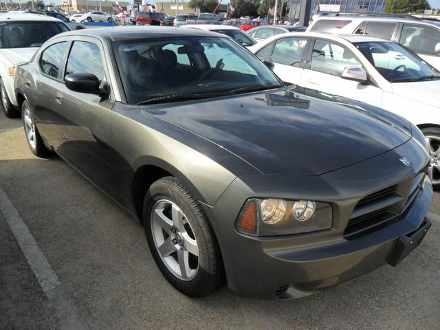
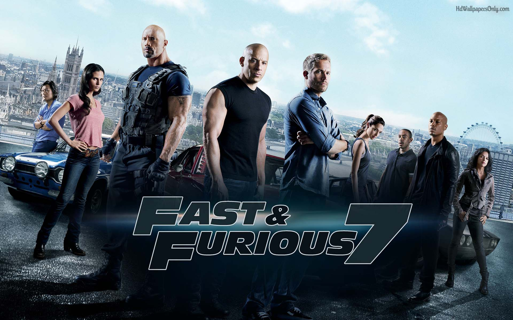
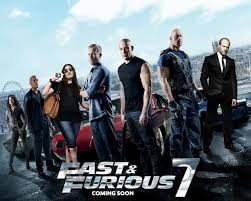
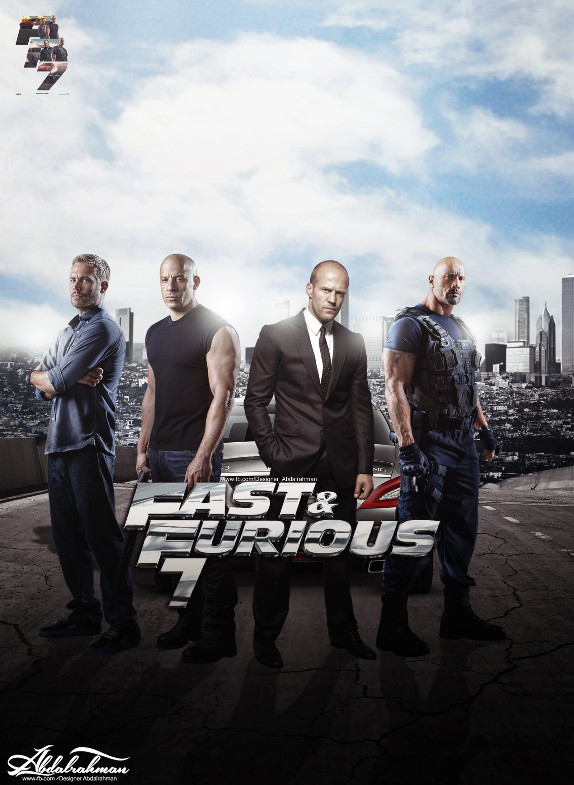
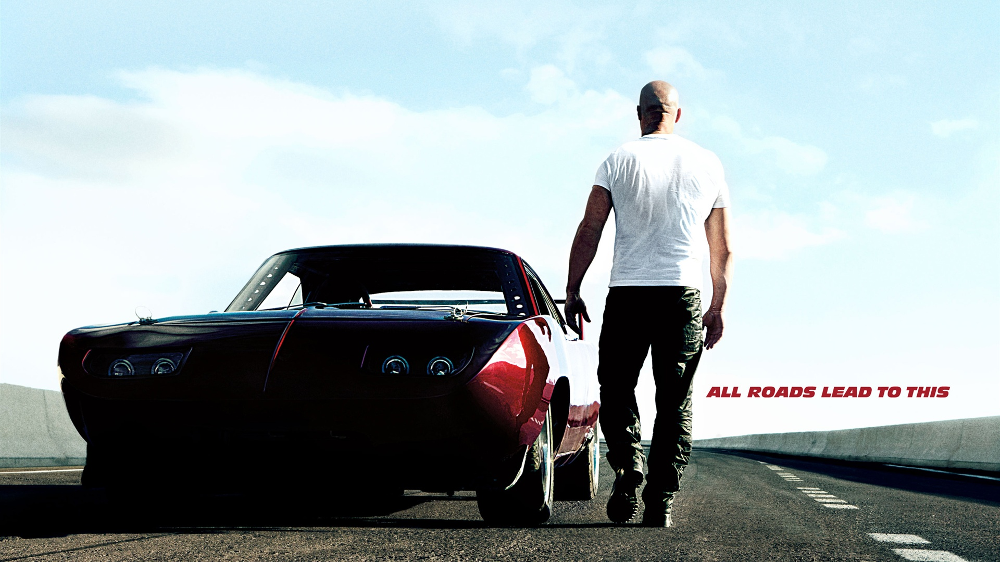

It's a never ending battle of making your cars better
and also trying to be better yourself.

Charge up the 2016 Chevrolet Volt, drive it for 50-plus miles until the battery runs low, and then it switches over to gasoline power and runs like a hybrid. The 2016 Chevrolet Volt is a great idea, and the new version brings several much-needed improvements.
Charge up the 2016 Chevrolet Volt, drive it for 50-plus miles until the battery runs low, and then it switches over to gasoline power and runs like a hybrid. The 2016 Chevrolet Volt is a great idea, and the new version brings several much-needed improvements.
Charge up the 2016 Chevrolet Volt, drive it for 50-plus miles until the battery runs low, and then it switches over to gasoline power and runs like a hybrid. The 2016 Chevrolet Volt is a great idea, and the new version brings several much-needed improvements.
Please join with our partners
.png)
.png)
.png)
.png)
.png)
News
|  |  |
|  |  |
Contact

Paul William Walker was an American actor. Walker began his career guest-starring in several television shows such as The Young and the Restless and Touched by an Angel. Walker gained prominence with breakout roles in coming-of-age and teen films such as She's All That and Varsity Blues. In 2001, Walker gained international fame for his portrayal of Brian O'Conner in the street racing action film The Fast and the Furious, and would reprise the role in five of the next six installments. He also starred in films such as Eight Below, Timeline, Into the Blue, Joy Ride and Running Scared. Outside of acting, Walker was the face of The Coty Prestige fragrance brand Davidoff Cool Water for Men, and starred in the National Geographic Channel series, Expedition Great White. He also founded the charity "Reach Out Worldwide" (ROWW), an organization providing relief efforts for areas affected by natural disasters. Walker died in a single-vehicle collision on November 30, 2013, alongside friend Roger Rodas. Three films that he was involved in at the time were released posthumously: Hours (2013), Brick Mansions (2014) and Furious 7 (2015). The song "See You Again" by Wiz Khalifa, which appeared on the Furious 7 soundtrack, is a tribute to Walker.